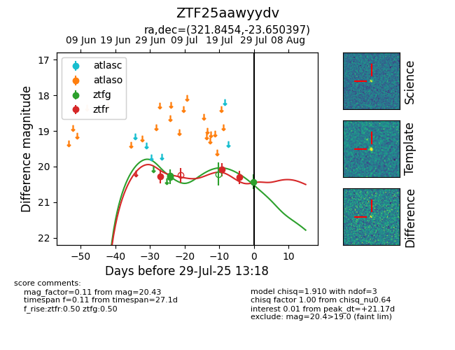

Target ZTF25aawyydv at 2025-07-23 11:52, see:
FINK: fink-portal.org/ZTF25aawyydv
Lasair: lasair-ztf.lsst.ac.uk/objects/ZTF25aawyydv
ALeRCE: alerce.online/object/ZTF25aawyydv
alt names
ZTF25aawyydv (ztf,fink)
coordinates:
equatorial (ra, dec) = (321.8454,-23.65040)
galactic (l, b) = (25.3919,-44.09185)
photometry
last ztfg=20.26, ztfr=20.09
2 ztfg, 2 ztfr detections
